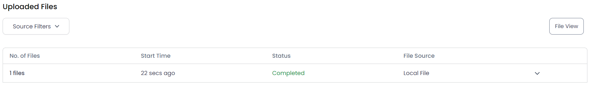

Portal Access
As a custodian, you can access the system once an admin sends you a
request. You will receive an email as shown below:

Click on the Launch Pinpoint CrossCopy button to open the portal. You will be prompted to log in to the system via OTP.

Click on the Generate OTP for Login button. You will receive an OTP in your mailbox, enter that code, and you will be successfully logged in.
File Upload
After you have logged in successfully, you will then see a similar screen:

You can either drop files into the upload box or select any source to
upload files from such as My Device, Dropbox, Google Drive, etc.
Importing from Google Drive
Importing from Local System

Click on Add More to add more files to the upload, else click on the Upload File button. You will be prompted to add a note regarding your uploaded file(s).

Enter your note, save, and continue to start your upload. You will be able to see your uploaded files at the bottom of your screen:
To view the details of your uploaded files, click on the arrow on the File View button. If you click on the down arrow, you will be able to see files in a hierarchy:

Whereas, if you click on the File View button, you will be able to see a view with file details only:

After you have uploaded the files, click on the I’m Done button:

You will see a prompt:

If you wish to upload more files later, select the
Done for now option, else click on Completely Done. Click on
Continue.
If you click on the former, you will be able to log in
again and upload more files. Otherwise, you will be permanently logged out
and will not be able to access again, unless the admin generates a new
request.